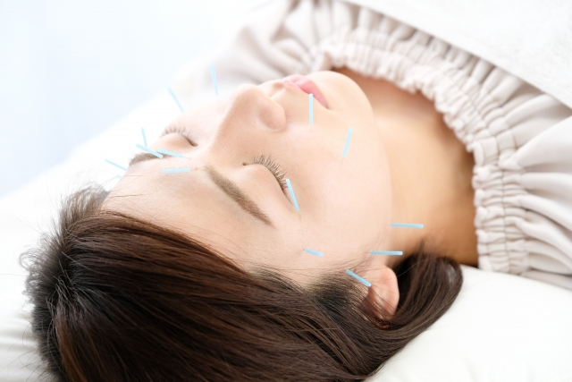

HOME
ご挨拶
施術メニュー
予約・お問合わせ

美容 小顔 美肌 シミ しわ
鍼治療の一番の効果は血流の改善です。はりきゅう刺激で微細な傷をつける事により、細胞は傷を修復しようとし、修復を促すために血行を促進させます。その結果、細胞の活性化に繋がり、コラーゲン繊維を強くします。よって、肌の弾力が高まり、しわやたるみの予防につながるのです。血流が促進されることでさまざまな美肌効果が期待できます。